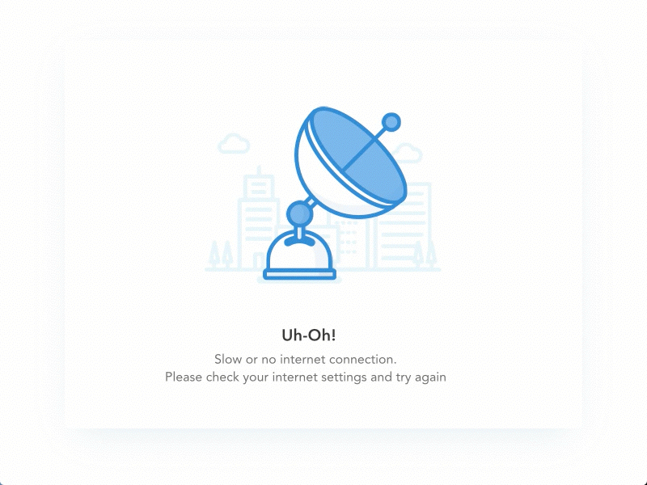

<div *ngIf="connectionStatus == 'online'" id="{{isLoginRoute || isHomeRoute  ? '' : 'wrapper'}}">
  
  <app-loader *ngIf="showLoader"></app-loader>
  <app-rdm-side-menu *ngIf="!isLoginRoute && !isHomeRoute"></app-rdm-side-menu>
  <!-- Content Wrapper -->
  <div id="{{isHomeRoute ? '' : 'content-wrapper'}}" [ngClass]="{'d-flex flex-column': !isHomeRoute}">

    <!-- Main Content -->
    <div id="{{isHomeRoute ? '' : 'content'}}">
      <app-header *ngIf="!isHomeRoute" [isLoginRoute]="isLoginRoute" [url]="url" [contextApp]="applicationData">
      </app-header>
      <!-- Begin Page Content -->
      <div id="routeWrapperDiv" [ngClass]="{'container-fluid': !isLoginRoute && !isHomeRoute}">
        <router-outlet></router-outlet>
      </div>
    </div>
    <app-footer *ngIf="!isHomeRoute" [isLoginRoute]="isLoginRoute"></app-footer>
  </div>
  
</div>

<div *ngIf="connectionStatus == 'offline'" class="logo">
  <!-- <div class="logo"></div> -->
  
</div>


